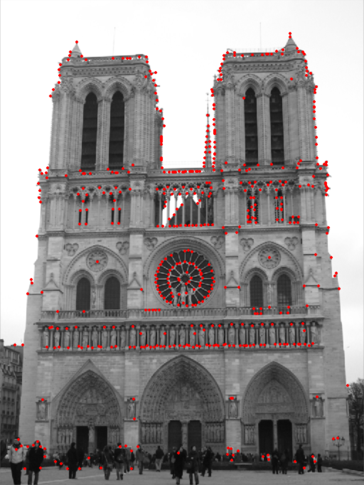
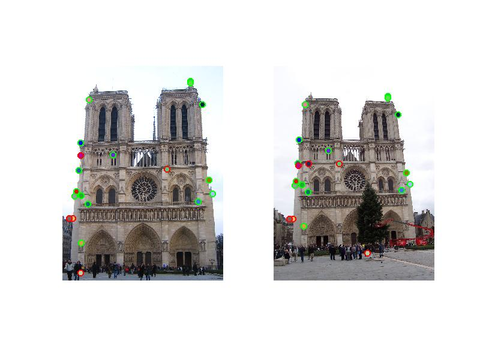
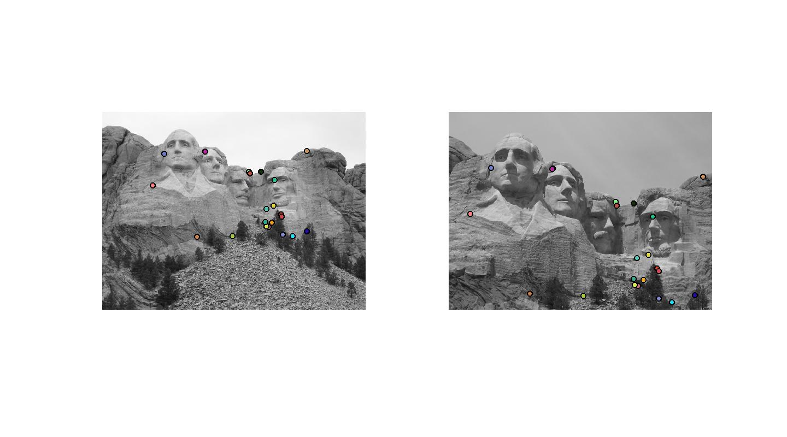
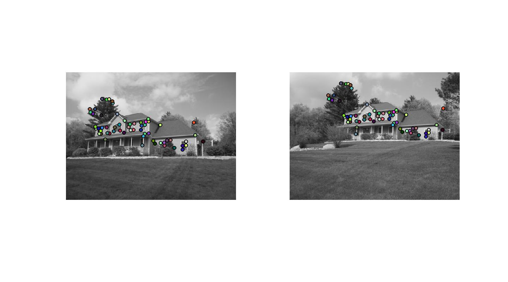

In this project, I implemented harris corner detector, SIFT feature descriptor and normalized patch descriptor, and feature matching algorithm by using nearest neighbour distance ratio test. Local feature matching is done by first extracting interest points with harris corner detector, then calculate a SIFT descriptor for every interest points, and finally matching these interest points using their descriptors.
I implemented harris corner detector by taking the following steps:
The above parameters: sigma1, sigma2, alpha, threshold, and sliding windows size can have huge influence on the final result. After some experiments, I found the above values can produce reasonably well results as shown below.

I implemented two methods for generating feature descriptors, one is normalized patches and another is SIFT descriptor. For normalized patches, I just take the pixels in a square region around the interest points, normalize them, and use them as descriptors. For SIFT descriptors, I took the following steps:
According the results shown below, SIFT descriptor performs much better than normalized patches. For the baseline images, SIFT descriptor can achieve 51 total good matches and 6 total bad matches, while normalized patches can only get 15 total good matches, 6 total bad matches.
Feature width can also have impact on the results. According to experiments, feature width 16 can get 44 total good matches, 8 total bad matches, while feature width 32 can get 51 total good matches, 6 total bad matches.

Left: Normalized patches. Right: SIFT
I implemented nearest neighbour ratio test for matching features. First I calculate distances for each feature descriptor in image1 to all the feature descriptors in image2, then for each feature descriptor in image1, if the ratio between two least distances with feature descriptors of image2 is less than 0.76, a correspondence is found.
The value of ratio can have huge impact on the result. If the value is increased, more wrong correspondence will be found. If the value is descreased, less correct correspondence will be found.
According to results, if the scale or orientation of the two images differs greatly, the results wouldn't be ideal.
